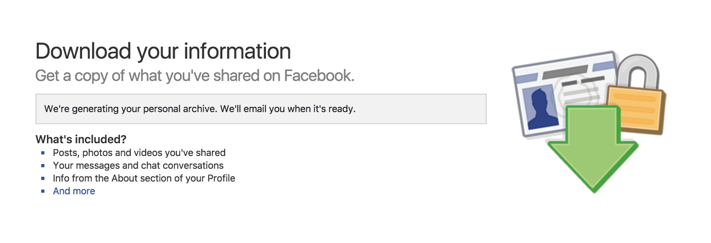

I have now been on Facebook for over 10 years, having initially joined in August 2006. It is an astonishing one third of my life. In light of achieving this “milestone” I decided to find out how my use of the platform has changed over the years.
In particular I wanted to see how my use of various features such as the timeline and messages have developed. I knew before doing any data analysis and visualisation that I have by now more or less stopped using the timeline. In contrast I intuitively felt that I had been using direct messages a lot in the past couple of years.
To see if I could confirm these presumptions and whether any other interesting trends exist, I downloaded my data archive from Facebook and visualised this data. All visualisations cover a period between the account creation in August 2006 and April 2017. After presenting the visualisations I describe the shortcomings of the Facebook data archive, the technical challenges I faced and the tools that I used to create the charts.
Friends
Adding friends is an integral feature of Facebook so I first decided to look at how my friend count has developed over the years. The data archive provides a list of all current friends and the date on which they were added. In addition there is a list of all friends who were deleted and the date on which the deletion occurred. Putting together these two lists, I plotted the total number of friends that I had at the start of each month.
The chart demonstrates two clear growth phases punctuated by one month (July 2010) in which I pruned my account by deleting 196 friends. Notable is the fact that growth before the pruning is a lot more rapid than the growth since then — my friend count has still not matched that peak level of 249 friends in July 2010.
The reason for deleting the majority of friends back then was the realisation that I had almost no connection with those particular people any more. Looking through the deleted list now, I have little recollection of who a lot of them are, and do not feel like I missed out on something meaningful by deleting them.
The visualisation reveals an interesting detail to me. I was convinced that I had barely added any new friends in recent years, however the chart tells a different story. Although at a slow pace, my friend count has actually been going up steadily over the last couple of years — something I did not expect to see.
Comparing timeline activity with direct messages
Next up I wanted to see how my open use of Facebook through my timeline compares with closed communication through direct messages. To do that I visualised the monthly activity on my timeline and contrasted it with the total number of messages sent each month.
This visualisation does not compare the timeline activity with the number of messages directly because there are too many messages to do that meaningfully. Instead it is possible to switch between having either one or the other in the foreground and to examine the differences in the overall trends.
Timeline activity includes all posts by me or anyone else on my timeline. The number of posts per month is relatively high and steady right at the start of my time on Facebook, peaking in April 2007. Since then the timeline activity is in a state of perpetual decline. The only yearly peaks occur in April as this is the month of my birthday and I receive congratulations on my timeline. I am quite convinced that if I were to hide my date of birth from my profile these peaks would disappear as well.
The number of messages includes all direct messages sent and received in that month. Compared to the timeline activity my use of messages is at first quite low. By the end of 2011 it starts picking up however and then follows a general upward trend.
There are some notable events annotated in the message view of the chart:
There is a sudden spike in message use in September 2011 which is when I relocated to Berlin. An explanation could be that I had a lot to sort out during the move and had to communicate heavily to facilitate this.
The standalone Messenger app was first introduced by Facebook in August 2011. In April 2014 the move of messaging function to Messenger was complete as it was phased out on the primary Facebook app. Apart from the initial spike in September 2011 it appears that the growth in my message use coincides with the introduction of Messenger.
At first I was sceptical about Messenger and resented Facebook for introducing a separate app just for messaging. This turned out to be a blessing in disguise however, since I was increasingly using Facebook solely for messaging. Messenger ultimately enabled me to stop using the Facebook app and in the end I even deleted it from my phone.
Has the number of messages hit a peak at some point in 2016? It's difficult to tell so far. Facebook are busy introducing new features into the core of Messenger such as the Snapchat-emulating Messenger Day. I personally find no use for them, so lately it feels like I don't enjoy my experience of using the app so much. I already use other services to communicate with some of my friends and I could continue migrating to them if Facebook accelerates the feature bloat in Messenger.
Messages
Finally I wanted to take a closer look at my use of messages. The previous chart shows that in recent years I have increasingly relied on Facebook messages as a method of communication, so I wanted to have some insights into it. How many different people have I chatted with using messages? Do I mostly communicate with a few select people or many people? How many messages have I sent in total?
To visualise my message use I plotted the number of messages sent per month separated into conversation threads.
Each layer represents a single message thread. A thread can contain messages between just me and one other person, or it could be between me and multiple people. While I was preparing and assembling the data sets it became clear to me that there were too many threads in total to meaningfully represent them all in one visualisation. To concentrate on my long-term contacts I decided to only include threads with messages in at least 12 separate months. The number of messages includes messages sent and received.
There is an immediately obvious pattern in the chart: my use of messages on Facebook is dominated by just a few threads. So I mostly message with only a couple of people and groups of people and only rarely write to any of the other friends that I have. I already assumed before visualising the data that this was the case, but the scale of it is nevertheless impressive.
I also used the data to extract some overall figures demonstrating just how much I have been using messages over the last 10 years.
442total threads
116107total messages
1277words in longest message
These numbers show that messaging on Facebook has been a big part of my digital life. At the same time I know that I have mostly stopped using Facebook's main product and messages are the only remaining part of my Facebook experience. The question for me is whether my use of messages will continue in the future or if other services will take over as I find better ways of communication.
Data extraction, processing and visualisation
It is commendable that Facebook enables every user to download an archive of their data. If someone wishes to delete their profile for example, they can save their contents before doing that. Unfortunately I found that the data was not structured or formatted well and I spent a lot of time writing scripts in order to extract and transform the data before being able to use it.

Downloading the data archive from Facebook
The data archive is made up of HTML files, with each file containing information from a separate source such as messages and timeline. Some of these files are particularly badly structured. For example the message archive is an incomprehensible data dump which is not ordered by date and has messages from the same thread scattered across different parts of the file.
I wrote several Python scripts in order to extract the data, organise it and export it into the datasets used in the visualisations. The Beautiful Soup library for Python was invaluable for parsing HTML files.
The formatting of the data archive could be improved a lot by Facebook to empower their users to analyse and use their data in a meaningful way.
I also wish that Facebook provided more information in the data archive, as there are some other aspects that I would have liked to analyse. There is no data relating to the use of Groups for instance. Likewise, as far as I can tell it is not possible to get a list of photos that one is tagged in. I assume the reasoning behind this is that Facebook considers only photos uploaded by me to be part of my data and not photos uploaded by someone else. However a list of dates and URL paths to photos in which I am tagged would have been nice to have.
While working on visualising the friend count, a difficulty that I faced was how to represent the friend count up until deleting 196 friends in July 2010. The list of deleted friends only provides the deletion date and not the date on which the friend was added. In the end I extrapolated the available data: dividing 196 friends by 48 months (August 2006 until July 2010), I added an average of 4.08 new friends per month to the months leading up to July 2010.
To create the visualisations I used D3.js, the excellent D3 Annotation module and Colorlogical to help with generating a colour palette.